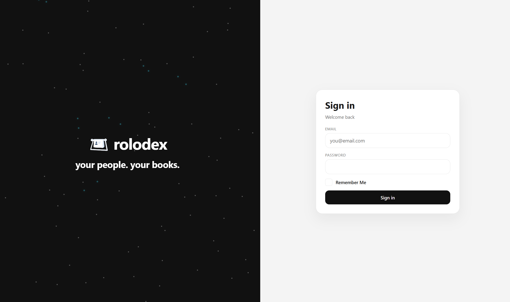

Overview
Quick start
A no-choices path to install Rolodex and try it. When you are ready for upgrades, reverse proxies, or every setting, use the Docker Compose and environment guides.
Requirements
- A machine that can run Docker and Docker Compose
- About 1 GB of RAM free for Postgres and Rolodex together
- One open HTTP port (8080 by default)
Set up the server
Step 1 — Get the files
Clone the repository, or copy docker-compose.yml and .env.example from the
GitHub repo into an empty
folder.
git clone https://github.com/Rolodex-PRM/rolodex.git
cd rolodex
cp .env.example .envmkdir rolodex && cd rolodex
curl -fsSL -o docker-compose.yml https://raw.githubusercontent.com/Rolodex-PRM/rolodex/main/docker-compose.yml
curl -fsSL -o .env https://raw.githubusercontent.com/Rolodex-PRM/rolodex/main/.env.exampleStep 2 — Set secrets in .env
Before the machine is reachable by anyone else, change at least:
POSTGRES_PASSWORD— database passwordCREDENTIALS_KEY— 32-byte base64 secret for encrypted credentials
node -e "console.log(require('crypto').randomBytes(32).toString('base64'))"
Leave ROLODEX_IMAGE=gallinij/rolodex:latest unless you want a pinned tag. Full variable
reference:
Environment variables.
Step 3 — Start the containers
docker compose pull
docker compose up -d
Two services start: Postgres and Rolodex. One published port serves the website, /api/,
CardDAV, and CalDAV. Details and the compose file live on
Docker Compose.
Try the web app
Open http://localhost:8080, or http://<this-machine>:8080 from another
device on the LAN. Change PORT in .env if 8080 is taken, then run
docker compose up -d again.
The first visit creates the administrator. Later accounts stay invite-only until you open registration under Admin → Security.

Point a phone at it
- Open Rolodex in the browser at the address phones should use (LAN or your domain behind a proxy).
- Under Settings, create a named sync client password. Do not put the website password on the phone.
- Add a CardDAV account and a CalDAV account (iPhone/iPad), or one DAVx5 account on Android, using that email and client password against the same base URL.
On a plain LAN URL, leave SSL off and keep the port. Through a domain, open the site once over HTTPS so
Settings can pick up the public origin. Set PUBLIC_URL only when phones must use a different
origin than the browser.
Where to go next
- Docker Compose — recommended production layout, volumes, and upgrades
- Environment variables — every setting and what it changes
- Backups — Postgres dump plus the uploads volume
- Roadmap — what is planned through 1.0